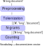
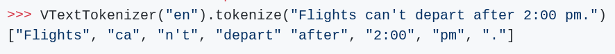
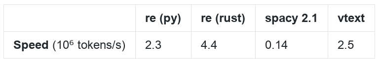
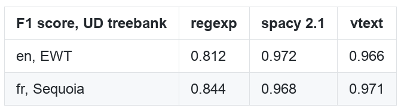
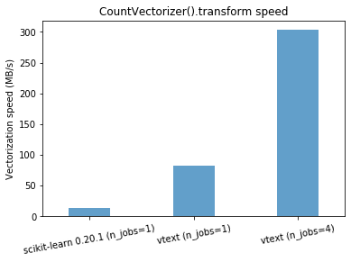
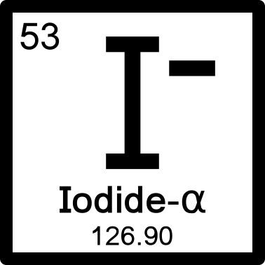
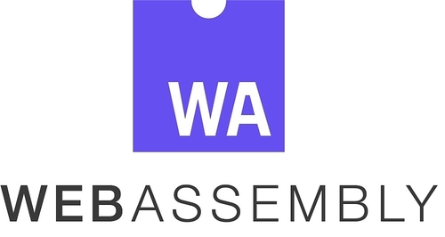
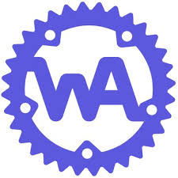

class: center, middle # vtext: text processing in Python using Rust Roman Yurchak <div style="height:100px"></div> .pull-left[ *PyConDE & PyData Berlin, August 2019* ] --- ## About me - Background: computational plasma physics and laboratory astophysics - Open source contributor: scikit-learn, pyodide, .. - Independent consultant for data science projects <br /> .pull-right[  ] --- ## Introduction Python in scientific computing is often used as a "glue" language. **Example: scipy** - *Lines of code* : 54% Python, 24% Fortran, 19% C, 3% C++ - *Average file edit frequency* : Python - 4 month, C - 2 years, Fortran - 6 years. Reference implementations in C/Fortran but few new contributions. Performance is due to compiled extensions. -- *Alternatives* - Cython, Pythran, numba -- convenient but interlinked with Python - Fortran, C, C++, **now also Rust** -- access to another ecosystem --- ## Rust .pull-right[ <img src='img/rust-social-wide.jpg' width='140%' /> ] - high performance - memory safety, including safe concurrency - package manager (`cargo`) - automatic memory management at compilation time (RAII), no garbage collection - runtime SIMD detection (AVX, etc) supported in stdlib --- ## Writing Python extensions in Rust (1) - PyO3: bindings for the Python interpreter (CPython, PyPy) - rust-numpy: binding of NumPy C-API - an young but growing ecosystem of scientific packages *For now PyO3 requires rust unstable.* <br /> -- **Example: vector summation** <small>*Rust code*</small> ```rust use ndarray::ArrayView1; fn sum_vec(x: &ArrayView1<'_, f64>) -> f64 { x.sum() } ``` 'See *"ndarray for numpy users"* guide. --- ## Writing Python extensions in Rust (2) **Example: vector summation** <small>*PyO3 wrapper*</small> ```rust use numpy::PyArray1; use pyo3::prelude::{pymodule, PyModule, PyResult, Python}; #[pymodule] fn rust_module(_py: Python<'_>, m: &PyModule) -> PyResult<()> { #[pyfn(m, "sum")] fn sum(py: Python<'_>, x: &PyArray1<f64>) -> PyResult<f64> { let res = sum_vec(&x.as_array()); Ok(res) } Ok(()) } ``` <small>*In Python*</small> ```py >>> import rust_module >>> np.array([2, 3], dtype=np.float64) >>> rust_module.sum(x) 5.0 ``` --- ## Text vectorization in NLP .pull-left[ <br /> Converting a textual document to a vector for machine learning or information retrieval applications. ] .pull-right[  <div style="margin-bottom: -30px;"></div> ] In scikit-learn, - `CountVectorizer` - counting tokens in a sparse CSR matrix - `HashingVectorizer` - also apply a hash function on the tokens --- ## Making CountVectorizer & HashingVectorizer faster - Numerous small incremental improvements in pure Python over last years - Rewrite token counting in Cython. `HashingVectorizer` already is. - tokenization is also a bottleneck - Unicode handling in C.. - Parallelization with dask & dask_ml - `data.map_partitions(HashingVectorizer().transform).compute()` --- ## Tokenization * **Regexp tokenization**: <small>`re.compile(r"\b\w\w+\b").findall`</small>. <small>Rust `regex` crate from Python is ~2x faster.</small> -- * **Unicode segmentation** + a few custom rules:  -- **Benchmarks**   --- ## Token counting - Due to compatible API and `cargo` fast iteration on, - `HashMap` (dict) implementations - hashing algorithms: Murmurhash 2, xxhash, .. - Parallel implementation for `.fit` and `.transform` - `X.par_iter().map(|doc| tokenize_hash(&doc))` <div style="margin-bottom: -15px;"></div> --  --- ## vtext <small>*Simple NLP in Rust with Python bindings*</small> **Features** - <small>Tokenization: Regexp tokenizer, Unicode segmentation</small> - <small>Token counting similar to `CountVectorizer` and `HashingVectorizer`. </small> - <small>Stemming: Snowball (in Python 15-20x faster than NLTK)</small> - <small>Levenshtein edit distance; Sørensen-Dice, Jaro, Jaro Winkler string similarities </small> -- **Installation** ``` pip install --pre vtext ``` <small>Binary wheels for Linux, Mac OS, Windows. No rust compiler necessary.</small> <div style="margin-bottom: -30px;"></div> .pull-left[ <small>[github.com/rth/vtext](https://github.com/rth/vtext) </small> ] .pull-right[ <small>*Still in alpha.*</small> ] --- ## Further experiment ideas - Build WebAssembly binaries -> using vtext from JS -- - Actually, CPython + numpy, pandas etc. build for WebAssembly to run inside the browser in the **pyodide** project. * Can we re-use those binaries? -- - Finally, it is possible to run WebAssembly binaries in Python with `wasmerio/python-ext-wasm` * *Toward platform independent Python wheels* <div style="margin-top: 50px;"></div>    <div style="clear:both"></div> --- ## Highlight of a few other projects - RustPython: (alpha) implementation of a Python interpreter in Rust .pull-right[ ] <div style="clear:both"></div> -- - argmin / pyargmin: numerical optimization in rust with Python bindings. In particular, LBFGS optimizer for ML applications. --- ## Python wishlist 1. Automatic code formatter tools (`cargo fmt`) are great: use `black`. 2. Semantic versions pinning of dependencies for each package helps reproducibility. Maybe solved by `poetry` or `pipenv`. 3. Dict need not to be used for everything. Typed dict.. 4. Better type inference in MyPy (& Cython) and type annotations (stubs) in numpy, scipy. --- ## Conclusions - Using Rust extensions for core algorithms can make scientific Python better - Besides inherent language performance, access to the Rust ecosystem - Feedback on rust-numpy wrapper API welcome -- - Other exciting projects - parsers: ARFF (OpenML), domain specific formats - optimization: `argmin` with `scipy.optimize` API - Rust implementation of Apache Arrow - ... --- class: center, middle Thank you! Questions? <div style="height:150px"></div> .pull-left[ <img src="img/twitter_icon.png" style='height: 30px;'> @RomanYurchak ] .pull-right[ [github.com/rth/vtext](https://github.com/rth/vtext) ]